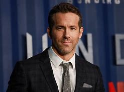
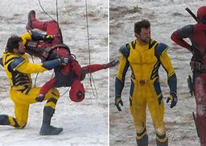

Recent posts
Updates on upcoming movie releases 2024.
Exciting news for film enthusiasts! The year 2024 is shaping up to be a fantastic one for movie releases,
with a diverse lineup that promises something for everyone. Here's a glimpse of what to expect:
Highly Anticipated Sequels:
Fans of blockbuster franchises will be thrilled with the return of major
series. Look out for new entries in the "Avatar" series, continuing James Cameron’s visually stunning
saga,
and the next chapter in the "Mad Max" universe, promising high-octane action and riveting storytelling.
Star-Studded Originals:
2024 will also see fresh and original films featuring top-tier talent. Expect Martin
Scorsese’s latest project, a period drama with a star-studded cast, and Greta Gerwig’s new directorial
venture, which promises to be a unique cinematic experience.
Exciting Adaptations:
Literary lovers can look forward to adaptations of popular novels and graphic
novels. Stephen King’s latest thriller will make its way to the big screen, as well as a highly
anticipated adaptation of the best-selling novel "The Night Circus".
Top 5 performances by a Ryan Reynolds.

Ryan Reynolds has showcased his versatility across a wide range of genres.
Here are five standout performances that highlight his talent:
- Deadpool (2016, 2018)
Role: Wade Wilson/Deadpool
Why: Reynolds' portrayal of the wisecracking anti-hero is arguably his most iconic role,
combining sharp humor with an unconventional approach to superhero storytelling.
- Buried (2010)
Role: Paul Conroy
Why: In this intense thriller, Reynolds delivers a gripping performance as a man trapped in a coffin,
showcasing his ability to carry a film almost entirely on his own.
- Free Guy (2021)
Role: Guy
Why: Reynolds plays a lovable NPC who discovers he’s in a video game,
bringing a unique mix of comedy and heartfelt moments to this imaginative action-comedy.
- Deadpool 2 (2018)
Role: Wade Wilson/Deadpool
Why: Reynolds reprises his role in the sequel, bringing
more depth to the character while maintaining the humor and irreverence that made the first film a hit.
- 6 Underground (2019)
Role: One
Why: In this high-octane action film,
Reynolds delivers a charismatic and high-energy performance as the leader of a group of vigilantes.
Behind-the-scenes news from Deadpool 3 film sets

"Deadpool 3" is generating a lot of buzz,
and behind-the-scenes news adds to the excitement. Here are some interesting tidbits:
- Return of Familiar Faces: Hugh Jackman is set to reprise his role as Wolverine, which is a huge draw
for fans. The film is expected to
explore new dynamics between Deadpool and Wolverine, adding a fresh layer to their on-screen relationship.
- Marvel Integration: With Disney owning Marvel, there’s a lot of anticipation about
how "Deadpool 3" will integrate with the broader Marvel
Cinematic Universe (MCU). Rumors suggest that the film will play a role in shaping future MCU narratives.
-
Director and Writers: Shawn Levy, known for his work on "Stranger Things" and "Free Guy,"
is directing "Deadpool 3." The writing team includes Rhett
Reese and Paul Wernick, who were behind the first two Deadpool films, ensuring continuity in tone and humor.
Deadpool 3 Trailer
ABOUT SHAP MOVIE'S BLOG
Dive into the world of cinema with us as we explore everything from timeless classics to
the latest blockbusters. Here, you'll find in-depth reviews, thought-provoking
analyses, and engaging discussions about the movies that shape our culture and stir our emotions.
Whether you’re a casual moviegoer or a die-hard cinephile, our blog offers something for everyone.
Join us as we unpack
the artistry behind your favorite films, discover hidden gems, and share our passion for storytelling.
Lights, camera, action—let’s make every film a conversation!